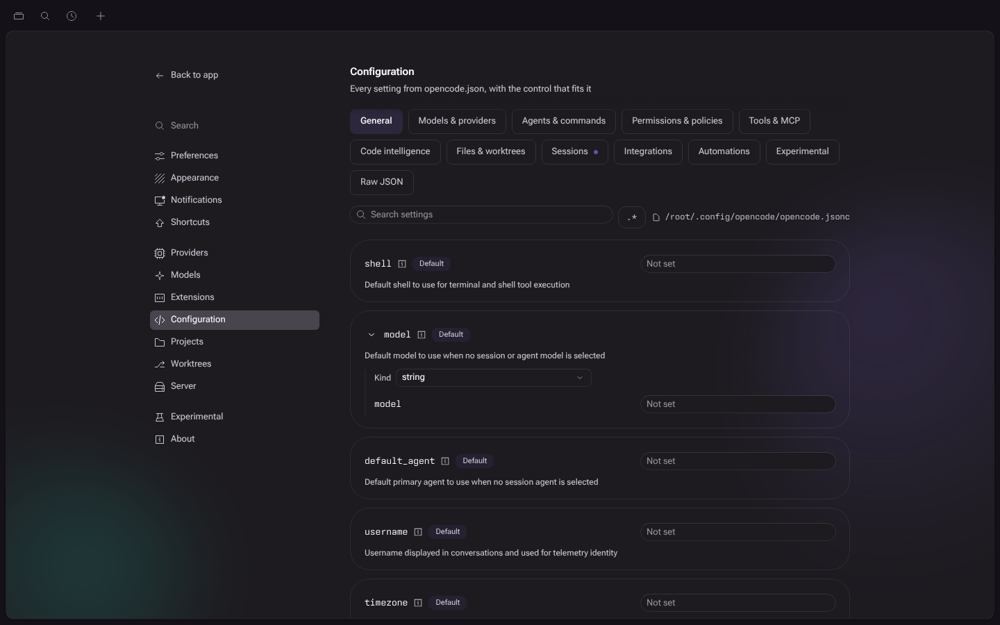
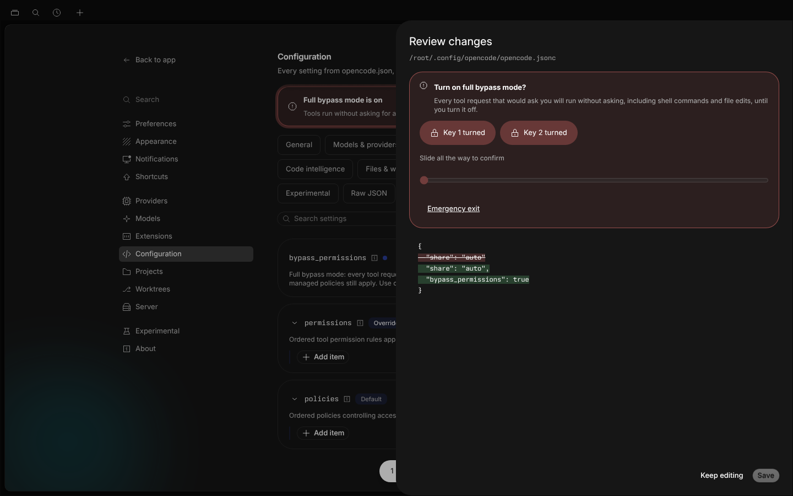

Material Expressive design
The app opens in the Material Expressive design: tonal surfaces on the default theme, Roboto Flex for interface text, large rounded panels, pill buttons and tabs, and spring motion on presses and switches. Home and Settings have slowly drifting backdrop graphics.
Switch between Material Expressive and Classic in Settings › Appearance › Design language. Picking another theme keeps that theme's colours; picking a UI font replaces Roboto Flex. Setting Reduce motion (or your system's reduced-motion preference) stops every animation.
Configuration studio
Open Settings › Configuration. Every key of opencode.json is listed by category, each with the control that fits its type: switches for on/off values, segmented buttons for short choices, sliders with a number field for bounded numbers, chip lists for lists of text, cards for named entries such as agents, commands and MCP servers, and a kind picker for values that take several shapes. Anything else gets a JSON editor that only applies valid JSON.
- The info icon next to a key shows its description; the badge shows whether a project or another global file also sets it.
- Search matches names and descriptions; the
.*button turns on regular expressions. - Review and save asks the server for a dry run and shows the exact change to your global configuration file. Comments and unrelated content are kept. Invalid changes are shown with the reason and cannot be saved.
- Raw JSON edits the whole document at once and turns each changed key into a pending change.

Full bypass permissions mode
With "bypass_permissions": true, every tool request that would ask for approval runs without asking. Configured deny rules and managed policies still apply.
In the Configuration studio, turning it on needs a two-key confirmation: turn both keys, then slide the confirmation all the way. Emergency exit or Escape cancels. While it is on, a warning with Turn off stays at the top of the studio.
Use bypass mode only in a sandbox or on code you trust.

Web app in Docker
From a checkout of the repository:
hosting/host.sh # macOS and Linux
hosting\host.bat # Windows with Docker DesktopThe first run starts an interactive setup that asks for the instance name, port, network address, projects folder and image, and creates the server password for you in hosting/.env. The script then starts the container and prints the address to open on your network. Sign in with the password from hosting/.env (user name opencode for API clients).
--ssh user@hostruns it on another machine with Docker.--buildbuilds the image from your checkout instead of pullingghcr.io/ding-ding-projects/material-opencode.--downstops it; your data volume is kept.
Appliance image
The appliance is a minimal Alpine Linux image that boots straight into Docker and starts the app, with the app image already inside so it works offline. Images are built for x86_64 (raw for USB, VDI for VirtualBox), generic arm64, and Raspberry Pi 4/400.
- Download the image from the latest build.
- Import the VDI into VirtualBox with a bridged network, or write the raw image to a USB drive or SD card.
- Boot it. The console shows the address to open. Log in on the console as
rootand runmaterial-opencode passwordto see the password.
On the appliance, material-opencode update pulls the newest app image and material-opencode logs follows the app's log.